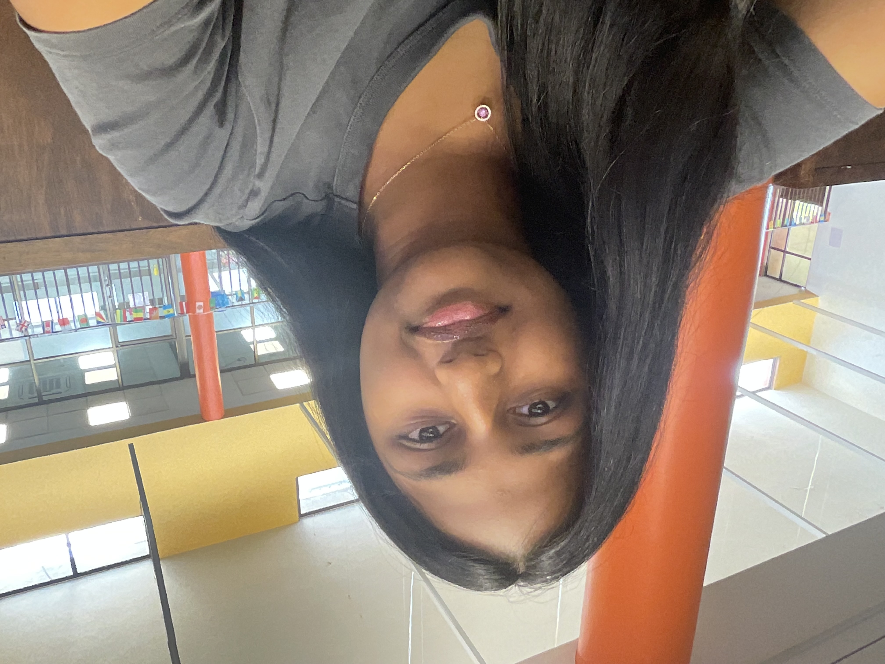

Education
Barriers to schooling, resources, safety and continued learning.

Millions of voices. Unequal opportunities. A world that can change.
Explore the issue ↗
Gender inequality is the unequal treatment, access, opportunities or power experienced by people because of their gender.
Women and girls across the world may experience barriers in education, employment, healthcare, safety, leadership and financial independence.
These inequalities can be influenced by laws, traditions, social expectations, economic conditions and institutions.
Equal opportunity should not depend on gender.
Barriers to schooling, resources, safety and continued learning.

Domestic labour and care work can be unevenly shared.

Career barriers, unequal pay and access to opportunities.
Some global indicators help show the scale of inequality.
Approximate share of parliamentary seats held by women globally in recent years.
Women globally spend around 2.5 times as much time on unpaid care and domestic work as men.
Access to employment, income, opportunities and economic resources remains unequal.
Global parliamentary representation
Relative time comparison
Figures are approximate indicators. Confirm exact data, dates and definitions using the linked original datasets before submission.

Women in India experience inequality differently depending on region, economic conditions, caste, education, disability and access to resources.
Barriers can include access to land, education, employment, credit, healthcare, technology and representation.
Women also play vital roles in farming, household economies, businesses and community leadership.
Learning opportunities can increase independence and choices.
Fair access to resources, work and financial opportunities matters.
Representation allows more perspectives in decision-making.
Historical values should be verified using ECI records before final submission.
The number of women elected to the Lok Sabha has increased compared with early elections. However, women's representation remains below equal representation.
Increasing representation is one part of progress. Access, participation and influence also matter.
Three Indian women whose work influenced social reform and public life.

A pioneering educator and social reformer who helped establish a school for girls in Pune in 1848 with Jyotirao Phule. She challenged caste discrimination and barriers to women's education.
Explore ↗
Social activist associated with the Right to Information movement and MKSS, advocating for transparency, public accountability and citizen participation.
Explore ↗
Social activist known for her involvement with the Narmada Bachao Andolan and advocacy for displaced communities, environmental concerns and social justice.
Explore ↗Question assumptions about what people can or should do.
Recognise and distribute unpaid domestic and care work more fairly.
Encourage equal learning opportunities and remove barriers.
Listen to perspectives and support inclusive decision-making.
Encourage fair systems, policies and responsible institutions.
Gender inequality continues to affect access to education, employment, resources, safety and leadership. Information about these issues is often scattered across different sources, making it difficult for young people to explore the topic in one engaging space.
Students and young people interested in understanding gender inequality and its effects.
Global indicators, education, unpaid labour, employment, political representation and examples from India.
Create an engaging and accessible website that communicates researched information, visualises trends, highlights examples and encourages awareness.
Review educational websites, data dashboards, awareness campaigns and digital publications to identify useful features and design opportunities.
From requirements to a design that turns research into an interactive experience.
Clear, right-aligned navigation with separate sections and criteria.
Meaningful photographs that relate directly to the topic.
Graphs and data visualisations with labels and source notes.
Responsive layout that works on tablet, laptop and mobile.
Readable typography, consistent spacing and distinct section layouts.
Research, analysis, action, evaluation and bibliography.
Charts, short findings and evidence-led storytelling.
Photography, essays, contrasting layouts and visual storytelling.
Sections organised around issues, geography and action.
The selected approach combines concise research, meaningful photographs, data visualisation, varied layouts and clearly organised navigation.
Collect sources, define audience, identify problem and gather evidence.
Week 1Develop layouts, specifications, navigation and visual direction.
Week 2Code the pages, create charts, integrate visuals and content.
Week 3Test functionality, readability, image loading and responsiveness.
Week 4HTML was used to structure the content, CSS to create the visual design and JavaScript to display interactive data visualisations.
Navigation and section structure → layout and styling → image integration → chart creation → testing.
Add screenshots of your code, website pages, graphs, development changes and testing.
Responsive grids, image cropping, accessible descriptions, chart labels and clear section hierarchy.
Test navigation, photographs, graph display, mobile layout, readability and source links.
Compare the final website with the design requirements and record whether each specification has been met.
Evaluate organisation, visual clarity, evidence, accessibility and relevance to the target audience.
Identify weaknesses in the research, data, technical performance or design.
Explain realistic changes that could improve usability, evidence, accessibility and impact.

This website was created as an MYP Design project to explore gender inequality, share research and communicate social issues through digital design.
Created by Nakshatra.